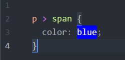
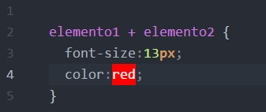
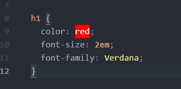
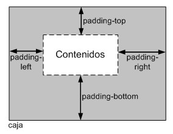

Curso CSS3
CSS (Cascading Style Sheets, u Hojas de Estilo en Cascada) es la tecnología desarrollada por el World Wide Web Consortium (W3C) con el fin de separar la estructura de la presentación.
Created by Omar Fonseca García / @Osensay79
Que es CSS ?
CSS es un lenguaje utilizado en la presentación de documentos HTML. Entonces podemos decir que el lenguaje CSS sirve para organizar la presentación y aspecto de una página web. Este lenguaje es principalmente utilizado por parte de los navegadores web de internet y por los programadores web informáticos para elegir multitud de opciones de presentación como colores, tipos y tamaños de letra, etc.
Estructura de un selector CSS
- Selector
- declaración
Capitulo 1
Selectores
Para crear diseños web profesionales, es imprescindible conocer y dominar los selectores de CSS. Como se vio en la diapositiva anterior, una regla de CSS está formada por una parte llamada "selector" y otra parte llamada "declaración".
Declaración
La declaración indica "que hay que hacer"
Selector
el selector indica "a quien hay que hacerlo"
A un mismo elemento HTML se le pueden aplicar varias reglas CSS y cada regla CSS puede aplicarse a un número ilimitado de elementos. En otras palabras, una misma regla puede aplicarse sobre varios selectores y un mismo selector se puede utilizar en varias reglas.
Selectores básicos
Selector Universal
"*"
Se utiliza para seleccionar todos los elementos de la página.

Selector de tipo etiqueta
Selecciona todos los elementos de la página cuya etiqueta HTML coincide con el valor del selector.
Para utilizar este selector, solamente es necesario indicar el nombre de una etiqueta HTML .
Encadenamiento de selectores
Si se quiere aplicar los mismos estilos a dos etiquetas diferentes, se pueden encadenar los selectores.
Ejemplo selectores
podríamos escribir para cada selector toda las propiedades como por ejemplo:
encadenamiento
o podríamos poner los selectores a la cual afecte la mismas reglas, separandolor por una coma(,).
Selector descendente
Un elemento es descendiente de otro cuando se encuentra entre las etiquetas de apertura y de cierre del otro elemento.
ejemplo selector descendente
El selector del siguiente ejemplo selecciona todos los elementos de la página que se encuentren dentro de un elemento "p"
ejemplo selector descendente
Los selectores descendentes permiten aumentar la precisión del selector de tipo o etiqueta.
Selector de clase
si se considera el siguiente código
¿Cómo se pueden aplicar estilos CSS sólo al primer párrafo? El selector universal (*) no se puede utilizar porque selecciona todos los elementos de la página. El selector de tipo o etiqueta (p) tampoco se puede utilizar porque seleccionaría todos los párrafos. Por último, el selector descendente (body p) tampoco se puede utilizar porque todos los párrafos se encuentran en el mismo sitio.
Una de las soluciones más sencillas para aplicar estilos a un solo elemento de la página consiste en utilizar el atributo class de HTML sobre ese elemento para indicar directamente la regla CSS que se le debe aplicar:
A continuación, se crea en el archivo CSS una nueva regla llamada destacado con todos los estilos que se van a aplicar al elemento. Para que el navegador no confunda este selector con los otros tipos de selectores, se prefija el valor del atributo class con un punto (.) tal y como muestra el siguiente ejemplo:
El selector .destacado se interpreta como "cualquier elemento de la página cuyo atributo class sea igual a destacado", por lo que solamente el primer párrafo cumple esa condición.
Porque son importantes los selectores de clase
Los selectores de clase son imprescindibles para diseñar páginas web complejas, ya que permiten disponer de una precisión total al seleccionar los elementos. Además, estos selectores permiten reutilizar los mismos estilos para varios elementos diferentes.
Con esta clase tendriamos un texto por ejemplo de color rojo.
Podríamos utilizar la misma clase para distintas partes de nuestra página web.
Selector de ID
En ocasiones, es necesario aplicar estilos CSS a un único elemento de la página. Aunque puede utilizarse un selector de clase para aplicar estilos a un único elemento, existe otro selector más eficiente en este caso.
La sintaxis de los selectores de ID es muy parecida a la de los selectores de clase, salvo que se utiliza el símbolo de la almohadilla (#) en vez del punto (.) como prefijo del nombre de la regla CSS:
La principal diferencia entre este tipo de selector y el selector de clase tiene que ver con HTML y no con CSS. Como se sabe, en una misma página, el valor del atributo id debe ser único, de forma que dos elementos diferentes no pueden tener el mismo valor de id. Sin embargo, el atributo class no es obligatorio que sea único, de forma que muchos elementos HTML diferentes pueden compartir el mismo valor para su atributo class.
combinación de selectores básicos
CSS permite la combinación de uno o más tipos de selectores para restringir el alcance de las reglas CSS.
El anterior selector solamente selecciona aquellos elementos con un
Ahora, el selector solamente selecciona aquellos elementos de tipo span con un atributo class="especial" que estén dentro de cualquier elemento de tipo div que tenga un atributo class="aviso".
SELECTORES AVANZADOS
Utilizando solamente los selectores básicos de la sección anterior, es posible diseñar prácticamente cualquier página web. No obstante, CSS define otros selectores más avanzados que permiten simplificar las hojas de estilos
selector de hijos
Se trata de un selector similar al selector descendente, pero muy diferente en su funcionamiento. Se utiliza para seleccionar un elemento que es hijo directo de otro elemento y se indica mediante el "signo de mayor que" (>):
El primer selector es de tipo descendente y por tanto se aplica a todos los elementos "a" que se encuentran dentro de elementos "p". En este caso, los estilos de este selector se aplican a los dos enlaces.
Por otra parte, el selector de hijos obliga a que el elemento "a" sea hijo directo de un elemento "p". Por lo tanto, los estilos del selector "p > a" no se aplican al segundo enlace del ejemplo anterior.
Selector adyacente
El selector adyacente se emplea para seleccionar elementos que en el código HTML de la página se encuentran justo a continuación de otros elementos. Su sintaxis emplea el signo + para separar los dos elementos:
agrupación de reglas
Cuando se crean archivos CSS complejos con decenas o cientos de reglas, es habitual que los estilos que se aplican a un mismo selector se definan en diferentes reglas:
Cuando el selector de dos o más reglas CSS es idéntico, se pueden agrupar las declaraciones de las reglas para hacer las hojas de estilos más eficientes:
colisiones de estilos
En las hojas de estilos complejas, es habitual que varias reglas CSS se apliquen a un mismo elemento HTML. El problema de estas reglas múltiples es que se pueden dar colisiones como la del siguiente ejemplo:
El método seguido por CSS para resolver las colisiones de estilos se muestra a continuación:
- Determinar todas las declaraciones que se aplican al elemento para el medio CSS seleccionado.
- Ordenar las declaraciones según su origen (CSS de navegador, de usuario o de diseñador) y su prioridad (palabra clave !important).
- Ordenar las declaraciones según lo específico que sea el selector. Cuanto más genérico es un selector, menos importancia tienen sus declaraciones.
- Si después de aplicar las normas anteriores existen dos o más reglas con la misma prioridad, se aplica la que se indicó en último lugar.
capitulo 2
Unidades de medida y colores
Muchas de las propiedades de CSS que se veremos mas adelante permiten indicar medidas y colores en sus valores. Además, CSS es tan flexible que permite indicar las medidas y colores de muchas formas diferentes.
Unidades de medida
Las medidas en CSS se emplean, entre otras, para definir la altura, anchura y márgenes de los elementos y para establecer el tamaño de letra del texto. Todas las medidas se indican como un valor numérico entero o decimal seguido de una unidad de medida (sin ningún espacio en blanco entre el número y la unidad de medida).
Medidas Absolutas y relativas
Medidad Absolutas
Las unidades absolutas establecen de forma completa el valor de una medida, por lo que su valor real es directamente el valor indicado.
Medidas Relativas
medidas relativas definen su valor en relación con otra medida, por lo que para obtener su valor real, se debe realizar alguna operación con el valor indicado.
Porcentajes
El porcentaje también es una unidad de medida relativa, aunque por su importancia CSS la trata de forma separada a em, ex y px. Un porcentaje está formado por un valor numérico seguido del símbolo % y siempre está referenciado a otra medida. Cada una de las propiedades de CSS que permiten indicar como valor un porcentaje, define el valor al que hace referencia ese porcentaje.
recomendaciones
En general, se recomienda el uso de unidades relativas siempre que sea posible, ya que mejora la accesibilidad de la página y permite que los documentos se adapten fácilmente a cualquier medio y dispositivo.
COLORES
Los colores en CSS se pueden indicar de cinco formas diferentes: palabras clave, colores del sistema, RGB hexadecimal, RGB numérico y RGB porcentual. Aunque el método más habitual es el del RGB hexadecimal, a continuación se muestran todas las alternativas que ofrece CSS
Palabras clave
CSS define 17 palabras clave para referirse a los colores básicos. Las palabras se corresponden con el nombre en inglés de cada color:
RGB decimal
Si todas las componentes valen 0, el color creado es el negro y si todas las componentes toman su valor máximo, el color obtenido es el blanco. En CSS, las componentes de los colores definidos mediante RGB decimal pueden tomar valores entre 0 y 255. El siguiente ejemplo establece el color del texto de un párrafo:
RGB Porcentual
El funcionamiento y la sintaxis de este método es el mismo que el del RGB decimal. La única diferencia es que en este caso el valor de las componentes RGB puede tomar valores entre 0% y 100%. Por tanto, para transformar un valor RGB decimal en un valor RGB porcentual, es preciso realizar una regla de tres considerando que 0 es igual a 0% y 255 es igual a 100%.
RGB hexadecimal
Aunque es el método más complicado para indicar los colores, se trata del método más utilizado con mucha diferencia. De hecho, prácticamente todos los sitios web reales utilizan exclusivamente este método.
Modelo de cajas
El modelo de cajas o "box model" es seguramente la característica más importante del lenguaje de hojas de estilos CSS, ya que condiciona el diseño de todas las páginas web. El modelo de cajas es el comportamiento de CSS que hace que todos los elementos de las páginas se representen mediante cajas rectangulares.
Las cajas de una página se crean automáticamente. Cada vez que se inserta una etiqueta HTML, se crea una nueva caja rectangular que encierra los contenidos de ese elemento. La siguiente imagen muestra las tres cajas rectangulares que crean las tres etiquetas HTML que incluye la página:

Las cajas de las páginas no son visibles a simple vista porque inicialmente no muestran ningún color de fondo ni ningún borde.

Los navegadores crean y colocan las cajas de forma automática, pero CSS permite modificar todas sus características. Cada una de las cajas está formada por seis partes, tal y como muestra la siguiente imagen:
- Contenido (content): se trata del contenido HTML del elemento (las palabras de un párrafo, una imagen, el texto de una lista de elementos, etc.)
- Relleno (padding): espacio libre opcional existente entre el contenido y el borde.
- Borde (border): línea que encierra completamente el contenido y su relleno.
- Imagen de fondo (background image): imagen que se muestra por detrás del contenido y el espacio de relleno.
- Color de fondo (background color): color que se muestra por detrás del contenido y el espacio de relleno.
- Margen (margin): separación opcional existente entre la caja y el resto de cajas adyacentes.
anchura y altura
anchura
la propiedad CSS que controla la anchura de la caja de los elemetos se denomina width
altura
La propiedad CSS que controla la altura de los elementos se denomina height.
margen y relleno
margen
CSS define cuatro propiedades para controlar cada uno de los márgenes horizontales y verticales de un elemento
Cada una de las propiedades establece la separación entre el borde lateral de la caja y el resto de cajas adyacentes:
Relleno
CSS define cuatro propiedades para controlar cada uno de los espacios de relleno horizontales y verticales de un elemento.
Cada una de estas propiedades establece la separación entre el contenido y los bordes laterales de la caja del elemento:
Margen, relleno, bordes y modelo de cajas
La anchura y altura de un elemento no solamente se calculan teniendo en cuenta sus propiedades width y height. El margen, el relleno y los bordes establecidos a un elemento determinan la anchura y altura final del elemento.
De esta forma, la anchura del elemento en pantalla sería igual a la suma de la anchura original, los márgenes, los bordes y los rellenos:
30px + 10px + 50px + 300px + 50px + 10px + 30px = 480 píxel
Así, la anchura/altura establecida con CSS siempre hace referencia a la anchura/altura del contenido. La anchura/altura total del elemento debe tener en cuenta además los valores del resto de partes que componen la caja del box model.
Fondos
El último elemento que forma el box model es el fondo de la caja del elemento. El fondo puede ser un color simple o una imagen. El fondo solamente se visualiza en el área ocupada por el contenido y su relleno, ya que el color de los bordes se controla directamente desde los bordes y las zonas de los márgenes siempre son transparentes.
Para establecer un color o imagen de fondo en la página entera, se debe establecer un fondo al elemento "body". Si se establece un fondo a la página, como el valor inicial del fondo de los elementos es transparente, todos los elementos de la página se visualizan con el mismo fondo a menos que algún elemento especifique su propio fondo.
background-color
La propiedad background-color permite mostrar un color de fondo sólido en la caja de un elemento. Esta propiedad no permite crear degradados ni ningún otro efecto avanzado.
El siguiente ejemplo muestra una página web con un color gris claro de fondo:
background-image
Para crear efectos gráficos avanzados, es necesario utilizar la propiedad background-image, que permite mostrar una imagen como fondo de la caja de cualquier elemento:
CSS permite establecer de forma simultánea un color y una imagen de fondo. En este caso, la imagen se muestra delante del color, por lo que solamente si la imagen contiene zonas transparentes es posible ver el color de fondo.
background
Por último, CSS define una propiedad de tipo "shorthand" para indicar todas las propiedades de los colores e imágenes de fondo de forma directa. La propiedad se denomina background y es la que generalmente se utiliza para establecer las propiedades del fondo de los elementos.
El orden en el que se indican las propiedades es indiferente, aunque en general se sigue el formato indicado de color, url de imagen, repetición y posición.
La propiedad background permite asignar todos o sólo algunos de todos los valores que se pueden definir.
posicionamiento y visualizacion
En este capítulo se muestran los cinco tipos de posicionamientos definidos para las cajas y se presentan otras propiedades que afectan a la forma en la que se visualizan las cajas.
tipos de elementos
El estándar HTML clasifica a todos sus elementos en dos grandes grupos: elementos en línea y elementos de bloque.
Los elementos de bloque ("block elements" en inglés) siempre empiezan en una nueva línea y ocupan todo el espacio disponible hasta el final de la línea. Por su parte, los elementos en línea ("inline elements" en inglés) no empiezan necesariamente en nueva línea y sólo ocupan el espacio necesario para mostrar sus contenidos.
Debido a este comportamiento, el tipo de un elemento influye de forma decisiva en la caja que el navegador crea para mostrarlo. La siguiente imagen muestra las cajas que crea el navegador para representar los diferentes elementos que forman una página HTML
posicionamiento
Los navegadores crean y posicionan de forma automática todas las cajas que forman cada página HTML. No obstante, CSS permite al diseñador modificar la posición en la que se muestra cada caja.
- Posicionamiento normal o estatico
- posicionamiento relativo
- posicionamiento absoluto
- posicionamiento fijo
- posicionamiento flotante
visualizacion
Además de las propiedades que controlan el posicionamiento de los elementos, CSS define otras cuatro propiedades para controlar su visualización: display, visibility, overflow y z-index.
propiedades display y visbility
Las propiedades display y visibility controlan la visualización de los elementos. Las dos propiedades permiten ocultar cualquier elemento de la página. Habitualmente se utilizan junto con JavaScript para crear efectos dinámicos como mostrar y ocultar determinados textos o imágenes cuando el usuario pincha sobre ellos.
display
Las posibilidades de la propiedad display son mucho más avanzadas que simplemente ocultar elementos. En realidad, la propiedad display modifica la forma en la que se visualiza un elemento.
Los valores más utilizados son inline, block y none. El valor block muestra un elemento como si fuera un elemento de bloque, independientemente del tipo de elemento que se trate. El valor inline visualiza un elemento en forma de elemento en línea, independientemente del tipo de elemento que se trate.
Texto
tipografia
CSS define numerosas propiedades para modificar la apariencia del texto. A pesar de que no dispone de tantas posibilidades como los lenguajes y programas específicos para crear documentos impresos, CSS permite aplicar estilos complejos y muy variados al texto de las páginas web.
tipografia color
La propiedad básica que define CSS relacionada con la tipografía se denomina color y se utiliza para establecer el color de la letra
A continuación se muestran varias reglas CSS que establecen el color del texto de diferentes formas:

font-family
La otra propiedad básica que define CSS relacionada con la tipografía se denomina font-family y se utiliza para indicar el tipo de letra con el que se muestra el texto.
El tipo de letra del texto se puede indicar de dos formas diferentes:
- Mediante el nombre de una familia tipográfica: en otras palabras, mediante el nombre del tipo de letra, como por ejemplo "Arial", "Verdana", "Garamond", etc.
- Mediante el nombre genérico de una familia tipográfica: los nombres genéricos no se refieren a ninguna fuente en concreto, sino que hacen referencia al estilo del tipo de letra. Las familias genéricas definidas son serif (tipo de letra similar a Times New Roman), sans-serif (tipo Arial), cursive (tipo Comic Sans), fantasy (tipo Impact) y monospace (tipo Courier New).
font-size
Una vez seleccionado el tipo de letra, se puede modificar su tamaño mediante la propiedad font-size.
Además de todas las unidades de medida relativas y absolutas y el uso de porcentajes, CSS permite utilizar una serie de palabras clave para indicar el tamaño de letra del texto:
tamaño_absoluto: indica el tamaño de letra de forma absoluta mediante alguna de las siguientes palabras clave: xx-small, x-small, small, medium, large, x-large, xx-large.
tamaño_relativo: indica de forma relativa el tamaño de letra del texto mediante dos palabras clave (larger, smaller) que toman como referencia el tamaño de letra del elemento padre.
texto
Además de las propiedades relativas a la tipografía del texto, CSS define numerosas propiedades que determinan la apariencia del texto en su conjunto. Estas propiedades adicionales permiten controlar al alineación del texto, el interlineado, la separación entre palabras, etc.
text-decoration
Además de la decoración que se puede aplicar a la tipografía que utilizan los textos, CSS define otros estilos y decoraciones para el texto en su conjunto. La propiedad que decora el texto se denomina text-decoration.
imagenes
establecer la anchura y la altura de las imagenes
Utilizando las propiedades width y height, es posible mostrar las imágenes con cualquier altura/anchura, independientemente de su altura/anchura real:
Por otra parte, establecer la altura/anchura de todas las imágenes mediante CSS es una práctica poco recomendable. El motivo es que normalmente dos imágenes diferentes no comparten la misma altura/anchura. Por lo tanto, se debe crear una nueva regla CSS (y un nuevo selector) para cada una de las diferentes imágenes del sitio web.
En la práctica, esta forma de trabajo produce una sobrecarga de estilos que la hace inviable. Por este motivo, se recomienda establecer la altura/anchura de las imágenes mediante los atributos width y height de la etiqueta "img":
Vertical Slides
Slides can be nested inside of each other.
Use the Space key to navigate through all slides.
Basement Level 1
Nested slides are useful for adding additional detail underneath a high level horizontal slide.
Basement Level 2
That's it, time to go back up.
Slides
Not a coder? Not a problem. There's a fully-featured visual editor for authoring these, try it out at http://slides.com.
Point of View
Press ESC to enter the slide overview.
Hold down alt and click on any element to zoom in on it using zoom.js. Alt + click anywhere to zoom back out.
Touch Optimized
Presentations look great on touch devices, like mobile phones and tablets. Simply swipe through your slides.
Fragments
Hit the next arrow...
... to step through ...
... a fragmented slide.
Fragment Styles
There's different types of fragments, like:
grow
shrink
fade-out
current-visible
highlight-red
highlight-blue
Transition Styles
You can select from different transitions, like:
None -
Fade -
Slide -
Convex -
Concave -
Zoom
Themes
reveal.js comes with a few themes built in:
Black (default) -
White -
League -
Sky -
Beige -
Simple
Serif -
Blood -
Night -
Moon -
Solarized
Slide Backgrounds
Set data-background="#dddddd" on a slide to change the background color. All CSS color formats are supported.
Image Backgrounds
<section data-background="image.png">Tiled Backgrounds
<section data-background="image.png" data-background-repeat="repeat" data-background-size="100px">Video Backgrounds
<section data-background-video="video.mp4,video.webm">... and GIFs!
Background Transitions
Different background transitions are available via the backgroundTransition option. This one's called "zoom".
Reveal.configure({ backgroundTransition: 'zoom' })Background Transitions
You can override background transitions per-slide.
<section data-background-transition="zoom">Pretty Code
function linkify( selector ) {
if( supports3DTransforms ) {
var nodes = document.querySelectorAll( selector );
for( var i = 0, len = nodes.length; i < len; i++ ) {
var node = nodes[i];
if( !node.className ) {
node.className += ' roll';
}
}
}
}
Code syntax highlighting courtesy of highlight.js.
Marvelous List
- No order here
- Or here
- Or here
- Or here
Fantastic Ordered List
- One is smaller than...
- Two is smaller than...
- Three!
Tabular Tables
| Item | Value | Quantity |
|---|---|---|
| Apples | $1 | 7 |
| Lemonade | $2 | 18 |
| Bread | $3 | 2 |
Clever Quotes
These guys come in two forms, inline:
“The nice thing about standards is that there are so many to choose from”
and block:
“For years there has been a theory that millions of monkeys typing at random on millions of typewriters would reproduce the entire works of Shakespeare. The Internet has proven this theory to be untrue.”
Intergalactic Interconnections
You can link between slides internally, like this.
Speaker View
There's a speaker view. It includes a timer, preview of the upcoming slide as well as your speaker notes.
Press the S key to try it out.
Export to PDF
Presentations can be exported to PDF, here's an example:
Global State
Set data-state="something" on a slide and "something"
will be added as a class to the document element when the slide is open. This lets you
apply broader style changes, like switching the page background.
State Events
Additionally custom events can be triggered on a per slide basis by binding to the data-state name.
Reveal.addEventListener( 'customevent', function() {
console.log( '"customevent" has fired' );
} );
Take a Moment
Press B or . on your keyboard to pause the presentation. This is helpful when you're on stage and want to take distracting slides off the screen.
Much more
- Right-to-left support
- Extensive JavaScript API
- Auto-progression
- Parallax backgrounds
- Custom keyboard bindings